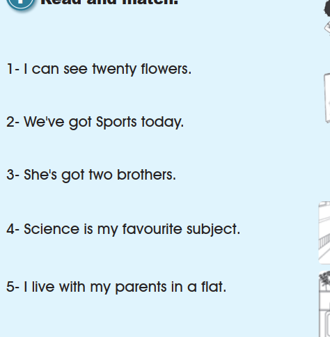
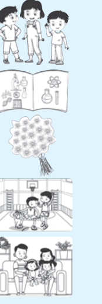
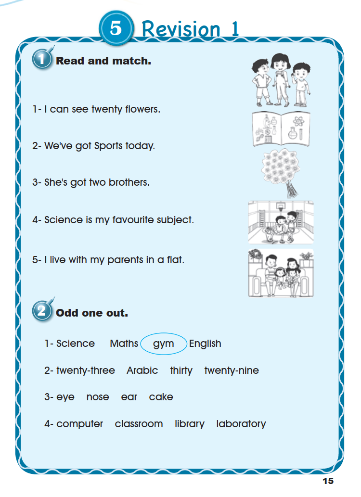
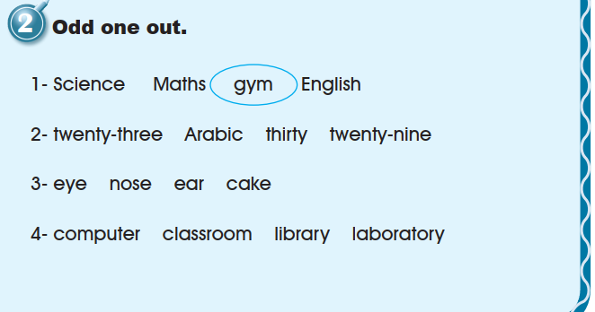
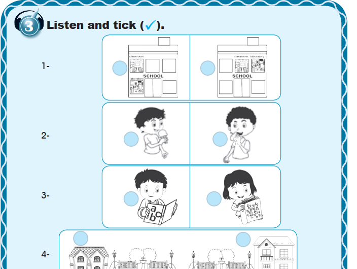
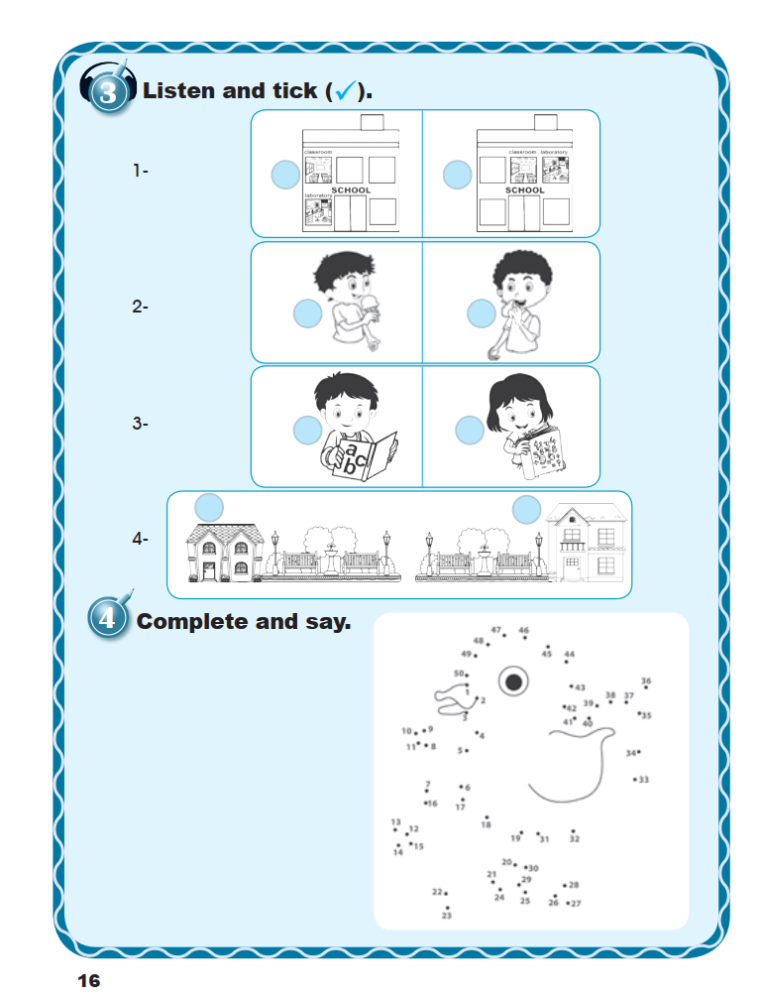
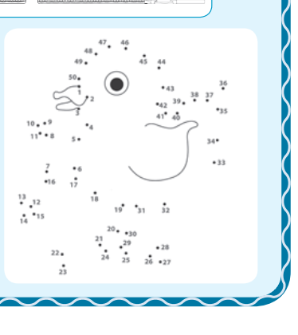
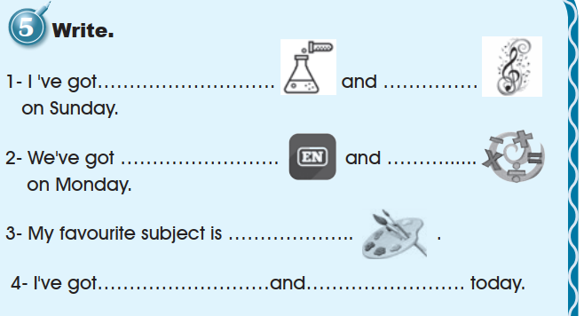
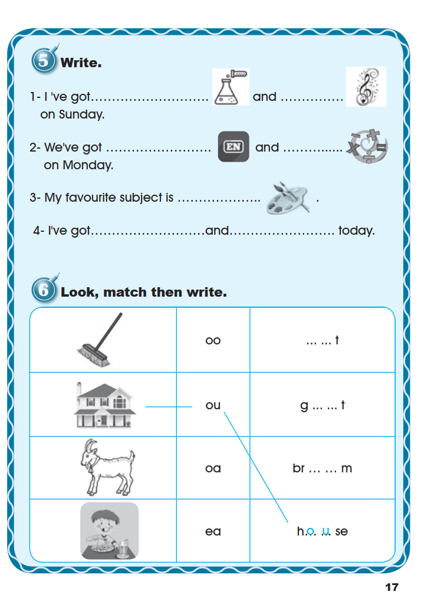
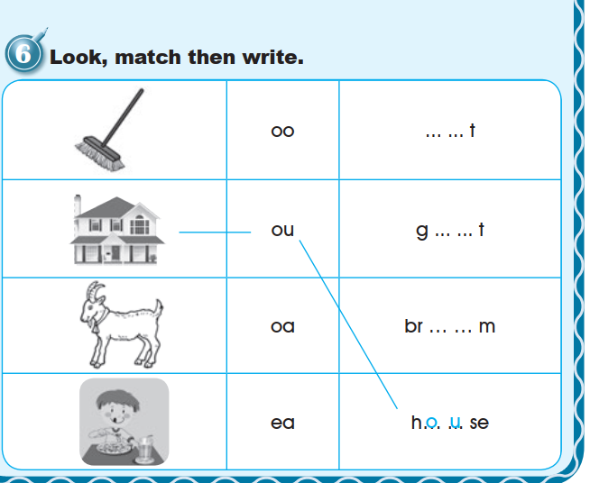

Workbook
Revision 1 · Workbook · pages 15–17. All six exercises are preserved in source order; the Pupil’s Book keeps its own separate pages and practice state.
1. Read and match.


Open the source page · Workbook · p. 15
The original supplied image, unchanged. Open it at full size to review the artwork and print.

2. Odd one out.

3. Listen and tick (✓).

Open the source page · Workbook · p. 16
The original supplied image, unchanged. Open it at full size to review the artwork and print.

4. Complete and say.

The book prints three empty lines for the number words you say while completing the picture. The dot-to-dot itself is printed with all fifty numbers, so it is reproduced above unchanged.
5. Write.

Open the source page · Workbook · p. 17
The original supplied image, unchanged. Open it at full size to review the artwork and print.

6. Look, match then write.

Open the source page · Workbook · p. 17
The original supplied image, unchanged. Open it at full size to review the artwork and print.